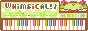
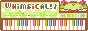
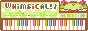

as you fly closer to the wormhole it forks off into to many paths, each leading to different corners of the web!
click on a button to travel there


 


as you fly closer to the wormhole it forks off into to many paths, each leading to different corners of the web!
click on a button to travel there

if you want to link to my site on yours, download my button and link to https://lophius.xyz